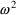
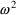
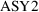
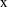
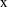

), as a function of initial dose (
), as a function of initial dose (
 ), time (
), and a parameter,
. As we may be interested in
), time (
), and a parameter,
. As we may be interested in
 at several possible times, we explicitly note this by the
subscript
which indexes a list of times,
.
at several possible times, we explicitly note this by the
subscript
which indexes a list of times,
.Chapter 3 - Models for Individual Data
In this chapter, the notation and definitions we will use to discuss models for individual data will be presented. The relationship of these models to data will be discussed, and a distinction between pharmacokinetic structural models (that describe the underlying shape and form of the data) and statistical error models (that describe the "errors" or differences between observations and structural model predictions) will be made. Several error models will be discussed, as will a useful modelling device, the indicator variable.
By individual data we usually mean data from a single individual (animal or human). One could also be concerned with data comprised of a pharmacokinetic response at just one time point from each of a number of individuals. Call this type of data single- response population data. This name comes from the fact that data such as these can, of course, be regarded as a particular instance of the more general data type, population data; i.e., data comprised of one or more pharmacokinetic responses at different time points from a number of individuals sampled from a population. Although one can discuss the treatment of single-response population data as population data, they are often treated just as are individual data.
A simple pharmacokinetic model for data from a single individual is the monoexponential ("one-compartment") model:
This model describes the
typical time course of amount of drug in the body (
), as a function of initial dose (
), time (
), and a parameter,
. As we may be interested in
at several possible times, we explicitly note this by the
subscript
which indexes a list of times,
.
A way to write a generic form for a structural model, omitting details of its structure, is
where
 stands for some "response" (dependent variable) of
interest (
in (3.1)), the symbol
stands for some "response" (dependent variable) of
interest (
in (3.1)), the symbol
 stands for the unspecified form of the model (a
monoexponential such as in (3.1)), which is a function of
known quantities,
stands for the unspecified form of the model (a
monoexponential such as in (3.1)), which is a function of
known quantities,
 (
(
 and
and
 in (3.1)), and parameters,
in (3.1)), and parameters,
 (
(
 in (3.1)). The quantities in x are known, because
they are either measured or controlled, and therefore, are
called fixed effects, in contrast to effects which
are not known and are regarded as random (see below). The
parameters in the parameter vector
in (3.1)). The quantities in x are known, because
they are either measured or controlled, and therefore, are
called fixed effects, in contrast to effects which
are not known and are regarded as random (see below). The
parameters in the parameter vector
 are called fixed effect parameters because they
quantify the influence of the fixed effects on the dependent
variable. Each one of an individual’s pharmacokinetic
parameters is a particular type of fixed effect parameter.
With NONMEM, parameters comprising
are called fixed effect parameters because they
quantify the influence of the fixed effects on the dependent
variable. Each one of an individual’s pharmacokinetic
parameters is a particular type of fixed effect parameter.
With NONMEM, parameters comprising
 are (usually) fixed effect parameters, but these may or may
not be an individual’s pharmacokinetic parameters
(contrast figures 2.1 and 2.6). Here we shall use the symbol
for the parameter vector comprised specifically of an
individual’s pharmacokinetic parameters (although
there will be some exception to this).
are (usually) fixed effect parameters, but these may or may
not be an individual’s pharmacokinetic parameters
(contrast figures 2.1 and 2.6). Here we shall use the symbol
for the parameter vector comprised specifically of an
individual’s pharmacokinetic parameters (although
there will be some exception to this).
Aside from the fact that
the values given by a structural model are usually not the
values observed due to measurement error or model
misspecification, an amount of drug (
 of (3.1)) is usually not itself observable. Instead, we may
observe a concentration (
of (3.1)) is usually not itself observable. Instead, we may
observe a concentration (
 ) of drug. We need an "observation scaling" model
to describe the relationship between
) of drug. We need an "observation scaling" model
to describe the relationship between
 and
and
 . This might be
. This might be
where V is another
parameter, Volume of Distribution. (We denote the
concentration in model (3.3) by the symbol
, to distinguish it, the model-predicted value, from the
actually observed value,
 . This will soon be discussed further.) PREDPP assumes that
there is always an observation scaling model like (3.3) that
relates an amount of drug (in some compartment of the body)
to the observation, and therefore always expects a
parameter,
that scales (i.e. divides) the predicted amount in the
compartment. In the example above,
is simply
. This will soon be discussed further.) PREDPP assumes that
there is always an observation scaling model like (3.3) that
relates an amount of drug (in some compartment of the body)
to the observation, and therefore always expects a
parameter,
that scales (i.e. divides) the predicted amount in the
compartment. In the example above,
is simply
 . In other examples, to be discussed later,
. In other examples, to be discussed later,
 can be more complicated. If a value for
is not specified, it is taken to be 1. For the rest of this
discussion, it is convenient to assume that
can be more complicated. If a value for
is not specified, it is taken to be 1. For the rest of this
discussion, it is convenient to assume that
 itself includes a scaling parameter (if such is needed, and
even though such a parameter is not usually regarded as one
of an individual’s pharmacokinetic parameters) and
that
itself includes a scaling parameter (if such is needed, and
even though such a parameter is not usually regarded as one
of an individual’s pharmacokinetic parameters) and
that
 actually includes observational scaling. Note, considering
the example of (3.3), that
, and
. Thus
actually includes observational scaling. Note, considering
the example of (3.3), that
, and
. Thus
 and
and
 of (3.1) are in general lists of things (vectors), not
single things (scalars).
of (3.1) are in general lists of things (vectors), not
single things (scalars).
PREDPP implements a
number of pharmacokinetic models, such as the
one-compartment model (3.1), (3.3). These will be discussed
more fully in Chapter 7. There is no need for further
general discussion of kinetic models, as we assume the
readers of this document are familiar with pharmacokinetics.
However, two modelling features deserve further comment,
alternative parameterizations and the special parameter,
 .
.
Recall the phenobarbital
example of Chapter 2. For the first run, the input
contained, among other things, some lines of code defining
the variables
 and
and
 , and then the line
, and then the line
K = CL/V
This line was needed
because PREDPP expects the one-compartment model to be
parameterized using the parameter
 , the rate constant of elimination, not clearance and volume
of distribution. However, we chose to estimate typical
population values for
, the rate constant of elimination, not clearance and volume
of distribution. However, we chose to estimate typical
population values for
 and
and
 , so we had to relate these parameters to THETA and then
relate
, so we had to relate these parameters to THETA and then
relate
 to
and
to
and
 . This is an example of reparametrization of a model so that
the pharmacokinetic parameters used are those of primary
interest to the modeler. In fact, we may use any
parameterization we wish, so long as we are willing to
include the reparameterization line(s) that translate our
parameters into those expected by PREDPP. (Chapter 7
discusses the parameters PREDPP expects for the various
models it implements.) However, there is a program called
TRANS which automatically does this translation. Different
versions of TRANS exist in the PREDPP Library and correspond
to translations of different parameterizations into that
expected by PREDPP.
. This is an example of reparametrization of a model so that
the pharmacokinetic parameters used are those of primary
interest to the modeler. In fact, we may use any
parameterization we wish, so long as we are willing to
include the reparameterization line(s) that translate our
parameters into those expected by PREDPP. (Chapter 7
discusses the parameters PREDPP expects for the various
models it implements.) However, there is a program called
TRANS which automatically does this translation. Different
versions of TRANS exist in the PREDPP Library and correspond
to translations of different parameterizations into that
expected by PREDPP.
Usually, observations are
concentrations. So, as in model (3.3),
 will usually be set identical to
will usually be set identical to
 . However,
. However,
 is not always simply
is not always simply
 . Some examples should clarify this point. (In the
discussion below, we avoid the notation
. Some examples should clarify this point. (In the
discussion below, we avoid the notation
 , and use
, and use
 , to refer to the scale term for the amount in the
compartment in which concentrations are being
measured.)
, to refer to the scale term for the amount in the
compartment in which concentrations are being
measured.)
This almost trivial case
occurs when one wishes to match the units of predicted
responses to those of the data. For example, suppose
 is in milligrams, but concentrations are in ng/ml. If no
scaling is done, the units of
is in milligrams, but concentrations are in ng/ml. If no
scaling is done, the units of
 will be kiloliters (i.e.,
will be kiloliters (i.e.,
 =1 corresponds to
=1 corresponds to
 =1000 liters). To avoid this, one might choose the
model
=1000 liters). To avoid this, one might choose the
model
thereby converting the
units of
 into micrograms, and since mcg/L
ng/ml, the units of
into micrograms, and since mcg/L
ng/ml, the units of
 become liters. Of course, one could recode one’s data,
dividing all concentrations by 1000 (or multiplying the dose
by 1000) and avoid this, but that may not be
convenient.
become liters. Of course, one could recode one’s data,
dividing all concentrations by 1000 (or multiplying the dose
by 1000) and avoid this, but that may not be
convenient.
Later in this chapter we will discuss a model used when the data arise from two different assays (call them assay 1 and assay 2). In such a case, there may be a systematic (multiplicative) bias of one assay relative to the other. If we wish to allow for this possibility, we might need a model such as
where
is a new parameter that measures the proportional bias of
the assays (i.e., bias causes the apparent volume of
distribution to be different for data from the two assays).
The parameter
 is not really a pharmacokinetic parameter, but for the
purpose of this discussion it can be included in
is not really a pharmacokinetic parameter, but for the
purpose of this discussion it can be included in
 .
.
Later in this chapter we
will describe a model useful when two kinds of responses are
measured, plasma and urine concentrations. In the case of
urine concentrations, the predicted total drug in the urine
during a time period (available from an "output"
compartment present in all models implemented by PREDPP; see
Chapter 7) would have to be scaled by the actual urine
volume during that time period. This volume would be an
element of
 , and
, and
 would be set equal to it.
would be set equal to it.
One does not, in fact, ever observe the predicted plasma concentration (or any other predicted response). What one observes is a measured value which differs from the predicted value by some (usually small) amount called a residual error (also called intra-individual error). We regard this error as a random quantity (see below). We will want NONMEM to fit our model to our data, and in so doing, provide us with estimates of the model parameters. The way NONMEM’s fit follows the data is determined largely by what we tell it about the nature of the errors (see Chapter 5). We must therefore provide NONMEM with another model, an error model.
There are many reasons
that the actual observation may not correspond to the
predicted value (e.g.
as given by the right side of (3.3)) The structural model
may only be approximate, or the quantities in
 may have been measured with error, or, as is always true,
pharmacokinetic responses may be measured with some error
(assay error). It is too difficult to model all these
sources of error separately, so we usually make the
simplifying assumption that each difference between an
observation and its prediction (i.e. each error) is a
randomly occurring number. When the data are from a single
individual, and the error model is the Additive error model
(see Section 3.1, below), the error is denoted by
may have been measured with error, or, as is always true,
pharmacokinetic responses may be measured with some error
(assay error). It is too difficult to model all these
sources of error separately, so we usually make the
simplifying assumption that each difference between an
observation and its prediction (i.e. each error) is a
randomly occurring number. When the data are from a single
individual, and the error model is the Additive error model
(see Section 3.1, below), the error is denoted by
 herein, by ETA in NONMEM output, and by ETA or ERR in
NM-TRAN input. (When data are from a population, and the
same error model is used, this error will be denoted
herein, by ETA in NONMEM output, and by ETA or ERR in
NM-TRAN input. (When data are from a population, and the
same error model is used, this error will be denoted
 ; see Chapter 4.) Therefore a model for the jth observation,
; see Chapter 4.) Therefore a model for the jth observation,
 , could be written
, could be written
Implicit in using the
symbol
 in this way is the assumption that all residual errors come
from probability distributions with mean zero and the same
(usually unknown) variance. (The error variance is the mean
squared error.) More complicated error models
involving
in this way is the assumption that all residual errors come
from probability distributions with mean zero and the same
(usually unknown) variance. (The error variance is the mean
squared error.) More complicated error models
involving
 can be written (see below). A schematic of model (3.4) is
shown for the structural model of (3.1), (3.3) in figure
3.1. Because this model describes the influence of both
fixed effects (
) and random effects (
), it is called a Mixed Effects Model (hence the
name, NONMEM: NONlinear Mixed Effects
Model). Mixed effects models, in general, may have
more than one random effect, and more than one type of
random effect (Chapter 4); (3.4) is only a particularly
simple example.
can be written (see below). A schematic of model (3.4) is
shown for the structural model of (3.1), (3.3) in figure
3.1. Because this model describes the influence of both
fixed effects (
) and random effects (
), it is called a Mixed Effects Model (hence the
name, NONMEM: NONlinear Mixed Effects
Model). Mixed effects models, in general, may have
more than one random effect, and more than one type of
random effect (Chapter 4); (3.4) is only a particularly
simple example.
Figure 3.1.
 vs
vs
 for a monoexponential model. The solid line is
; the circles are the observed data points. An error is
indicated.
for a monoexponential model. The solid line is
; the circles are the observed data points. An error is
indicated.
Even though errors are
unpredictable random quantities, some information about them
is usually assumed, and some can be estimated. First, it is
assumed that the mean error is zero. This simply means that
were the true values for the parameters in
 known, the model would have no systematic overall bias
(e.g., be systematically below or above the data points, on
average).
known, the model would have no systematic overall bias
(e.g., be systematically below or above the data points, on
average).
A second aspect of the
error, one that can be estimated by NONMEM, is its typical
size. Since errors may be positive or negative, their
typical size is not given by their mean (which is zero), but
by their standard deviation, the square root of their
variance. One can always simply convert the variance into
the standard deviation, and conversely. NONMEM output gives
estimates of the error variance. With individual data this
variance is denoted in this text by
, and by OMEGA in NONMEM input and output. The standard
deviation (SD) of the error is denoted
 herein. The reason that OMEGA, rather than, for example,
OMEGA SQ stands for
herein. The reason that OMEGA, rather than, for example,
OMEGA SQ stands for
 in NONMEM input and output will be discussed in Section 3.8.
(We will see, in Chapter 4, that when the error is
symbolized by
in NONMEM input and output will be discussed in Section 3.8.
(We will see, in Chapter 4, that when the error is
symbolized by
 , not
, not
 , its variance will be denoted
, its variance will be denoted
 in this text, and SIGMA, not OMEGA, in NONMEM input and
output.) Here, the parameter

quantifies the influence of the random effect,
in this text, and SIGMA, not OMEGA, in NONMEM input and
output.) Here, the parameter

quantifies the influence of the random effect,
 on the observations,
on the observations,
 . It is therefore called a random effects
parameter.
. It is therefore called a random effects
parameter.
The symbol
 is always used to denote a random quantity whose probability
distribution has mean zero and variance
is always used to denote a random quantity whose probability
distribution has mean zero and variance
 . Model (3.4) says that the errors themselves can be so
regarded, and since an observation equals its prediction
(under the structural model) plus an error, model (3.4) is
called the Additive error model. This model is
illustrated in figure 3.2.
. Model (3.4) says that the errors themselves can be so
regarded, and since an observation equals its prediction
(under the structural model) plus an error, model (3.4) is
called the Additive error model. This model is
illustrated in figure 3.2.
Figure 3.2.
 vs
for a monoexponential model. The middle line is
vs
for a monoexponential model. The middle line is
 ; the outer lines give the approximate "envelope"
for additive errors. Don’t be fooled by the apparent
widening of the gap between the upper and lower curves as
time increases: the vertical distance from the middle line
to either outer line is everywhere the
same.
; the outer lines give the approximate "envelope"
for additive errors. Don’t be fooled by the apparent
widening of the gap between the upper and lower curves as
time increases: the vertical distance from the middle line
to either outer line is everywhere the
same.
NONMEM allows an error model which can be more complicated than that of (3.4). One such more complicated, but useful model is the Constant Coefficient of Variation (CCV), or Proportional error model,
A fractional error is an
error expressed as a fraction of the corresponding
prediction. The CCV model says that a fractional error can
be written as an
 , i.e. as a random quantity with mean zero and variance
, i.e. as a random quantity with mean zero and variance
 . Under this model, the variance of an error itself is
proportional to the squared prediction, with
. Under this model, the variance of an error itself is
proportional to the squared prediction, with
 being the proportionality factor, and so is not constant
over observations. Since, under this model, the standard
deviation of the error, and also of
being the proportionality factor, and so is not constant
over observations. Since, under this model, the standard
deviation of the error, and also of
 , is
, and since the mean of
, is
, and since the mean of
 is
(when
is
(when
 assumes its true value), the coefficient of variation of
assumes its true value), the coefficient of variation of
 is just the constant
is just the constant
 (the coefficient of variation of a random quantity is
defined as its standard deviation divided by its mean). This
is the reason the CCV error model is so named. Also for this
reason,
(the coefficient of variation of a random quantity is
defined as its standard deviation divided by its mean). This
is the reason the CCV error model is so named. Also for this
reason,
 is dimensionless, in contrast to having units equal to those
of the squared observation as with the Additive model. This
error model is illustrated in figure 3.3.
is dimensionless, in contrast to having units equal to those
of the squared observation as with the Additive model. This
error model is illustrated in figure 3.3.
Figure 3.3.
vs
 for a monoexponential model. The middle line is
for a monoexponential model. The middle line is
 ; the outer lines give the approximate "envelope"
for constant coefficient of variation
errors.
; the outer lines give the approximate "envelope"
for constant coefficient of variation
errors.
The exponential error model is
This model is sometimes referred to as the log-normal model, because it it is additive if logs are taken (and because eta sj is assumed to be normally distributed):
See Chapter 8, Section 3.2 for a discussion of this model.
When most observations obey the CCV model but some observations may be near the lower limit of detection of an assay, a model which may be useful is one which is a combination of both the Additive and CCV error models:
Here there are two types
of
 ’s,
and
’s,
and
 . The first has variance
; the second has a possibly different variance,
. NONMEM permits several types of
. The first has variance
; the second has a possibly different variance,
. NONMEM permits several types of
 ’s. Under this model, the variance of the error
portion of the model is
’s. Under this model, the variance of the error
portion of the model is
 . When the prediction is near zero, the variance is
approximately constant, namely
. This is the smallest variance possible and corresponds,
perhaps, to the limit of assay precision. When the
prediction is considerably greater than zero, the variance
is approximately proportional to the squared
prediction.
. When the prediction is near zero, the variance is
approximately constant, namely
. This is the smallest variance possible and corresponds,
perhaps, to the limit of assay precision. When the
prediction is considerably greater than zero, the variance
is approximately proportional to the squared
prediction.
A model that has both the additive and the CCV error models as special cases, and smoothly interpolates between them in other cases is the Power Function model:
Here
is raised to the
power in the error model, rather than the
power (Additive error model; note
for any number,
) or the first power (CCV model). The parameter
 is a fixed effects parameter, even though its role in the
overall model is to modify the variance model, not the
structural model. With NONMEM all fixed effect parameters
must be elements of the general parameter vector
is a fixed effects parameter, even though its role in the
overall model is to modify the variance model, not the
structural model. With NONMEM all fixed effect parameters
must be elements of the general parameter vector
 . If we want the Power Function Model to interpolate between
the additive and CCV models,
. If we want the Power Function Model to interpolate between
the additive and CCV models,
 must be constrained to lie between 0 and 1. NONMEM allows
this (see Chapter 9). While one might be tempted to combine
the Power Function model with the Additive model, much as
the CCV and Additive model were combined above, such a
combination model can lead to identifiability difficulties,
and for this reason such a combination should be
avoided.
must be constrained to lie between 0 and 1. NONMEM allows
this (see Chapter 9). While one might be tempted to combine
the Power Function model with the Additive model, much as
the CCV and Additive model were combined above, such a
combination model can lead to identifiability difficulties,
and for this reason such a combination should be
avoided.
Another more complicated
error model can arise when more than one type of measurement
is made. Suppose, for sake of illustration, that the
observations are drug concentrations, but that they are
measured with two different assays. If one assay may be more
precise than the other, then this is equivalent to saying
that one assay has a smaller
 than the other. We would like to be able to take this into
account in the analysis (i.e., not pay as much attention to
the less precise observations), and perhaps (if we have
enough data) estimate the relative precision of the assays
as well. To do this in the notation we have introduced, an
independent variable indicating which observations are
obtained with which assay is needed: we call such an
independent variable an indicator variable.
than the other. We would like to be able to take this into
account in the analysis (i.e., not pay as much attention to
the less precise observations), and perhaps (if we have
enough data) estimate the relative precision of the assays
as well. To do this in the notation we have introduced, an
independent variable indicating which observations are
obtained with which assay is needed: we call such an
independent variable an indicator variable.
Let one of the data items
(an element of
 ) be labeled
, and let
take the value 1 if the assay used for
was of the first type, and the value 0, if it was of the 2nd
type. The variable,
) be labeled
, and let
take the value 1 if the assay used for
was of the first type, and the value 0, if it was of the 2nd
type. The variable,
 is an indicator variable, and it allows us to write an
additive type error model, say, as
is an indicator variable, and it allows us to write an
additive type error model, say, as
Here there are two types
of
 ’s,
and
. The first applies to the first type of assay, and has
variance
; the second applies to the second type of assay, and has a
possibly different variance,
’s,
and
. The first applies to the first type of assay, and has
variance
; the second applies to the second type of assay, and has a
possibly different variance,
 . NONMEM permits several types of
. NONMEM permits several types of
 ’s. Different types of
’s. Different types of
 ’s can be correlated, and NONMEM can allow this.
However, this is something we would only need to consider in
the example at hand if the same blood sample were measured
by both assays. We will not emphasize this possibility in
this introductory guide. (This possibility also applies to
random variables describing unexplained interindividual
differences with population data; see Chapter 4)
’s can be correlated, and NONMEM can allow this.
However, this is something we would only need to consider in
the example at hand if the same blood sample were measured
by both assays. We will not emphasize this possibility in
this introductory guide. (This possibility also applies to
random variables describing unexplained interindividual
differences with population data; see Chapter 4)
When the assay is done by the first method, will be unity, and (3.8) becomes
so that the variance of
the error is
. When the assay is done by the second method,
 will be zero, and (3.7) becomes
will be zero, and (3.7) becomes
so that the variance of the error is now . Both and are random effect parameters.
An equivalent form of the model that can be implemented easily is
The same need for
separate scales for different measurements can arise when
more than one type of observation is made. Suppose both
plasma concentrations (
 ) and urine concentrations (
) and urine concentrations (
 ) are measured. The structural model for
might be (3.1), (3.3). If we assume that urine is collected
between each observation of
) are measured. The structural model for
might be (3.1), (3.3). If we assume that urine is collected
between each observation of
 , then the structural model for
, the drug concentration in the urine collected between time
, then the structural model for
, the drug concentration in the urine collected between time
 and time
and time
 might be
might be
where
 is the fraction of drug excreted unchanged (a parameter),
and
is the urine volume collected between time
is the fraction of drug excreted unchanged (a parameter),
and
is the urine volume collected between time
 and
and
 (a data item)†.
(a data item)†.
----------
† With all
PREDPP pharmacokinetic models there is an output compartment
for which the total amount of drug leaving the system is
computed automatically. The concentration in the urine is
then obtained by setting the scaling parameter for the
output compartment to
 .
.
----------
Assuming again, for sake
of the example, that we want to use an additive type error
model for the observations, the problem is that urine
concentrations can be orders of magnitude larger than plasma
concentrations, so that, while an additive error model might
be appropriate for either type of observation alone, the two
types of observations must have different typical error
magnitudes; i.e., different variances (
 ’s).
’s).
An indicator variable can
again be used. Let the indicator variable
be unity if the
observation is a
 , and 0 if it is a
, and 0 if it is a
 . We now need to use it for both the structural and error
models, so that:
. We now need to use it for both the structural and error
models, so that:

A little thought shows
that the indicator variable selects the correct prediction (
or
) and the correct error term for each observation (
 ).
).
An equivalent form of the model that can be implemented easily is
Of course, there could be
three types of assays, or more, and similarly, more than two
types of observations. One usually needs one less indicator
variable than types of things to be distinguished. So, if
there were three assays, one would define
and

.
 would be 1 if the assay were of the first type, and zero
otherwise;
would be 1 if the assay were of the second type, and zero
otherwise. The error model for the data would require three
types of
would be 1 if the assay were of the first type, and zero
otherwise;
would be 1 if the assay were of the second type, and zero
otherwise. The error model for the data would require three
types of
 ’s,
’s,
 ,
,
 , and
.
, and
.
Equation (3.11) results in the following:
An equivalent form of the model that can be implemented easily is
We have just seen examples of more complicated error models than the simple Additive model. We here give a mathematical form for the most general mixed effects model that is considered within the scope of this document:
where
 is a vector valued function of

and parameters
is a vector valued function of

and parameters
 (where the latter is interpreted broadly to contain
parameters such as
(where the latter is interpreted broadly to contain
parameters such as
 of (3.7)), and
of (3.7)), and
 is a vector of different different
is a vector of different different
 types. The notation
denotes vector transpose. When there is more than one
types. The notation
denotes vector transpose. When there is more than one
 type, there will be several
type, there will be several
 ’s, one for each type. The collection of these is
denoted
’s, one for each type. The collection of these is
denoted
 and is labeled OMEGA in NONMEM input and output. This
collection is regarded as a diagonal matrix (diagonal for
now; but see Chapter 4), rather than as a vector. We will
use the symbol
and
interchangeably in this text to denote the (diagonal)
element of this matrix found in position
.
and is labeled OMEGA in NONMEM input and output. This
collection is regarded as a diagonal matrix (diagonal for
now; but see Chapter 4), rather than as a vector. We will
use the symbol
and
interchangeably in this text to denote the (diagonal)
element of this matrix found in position
.